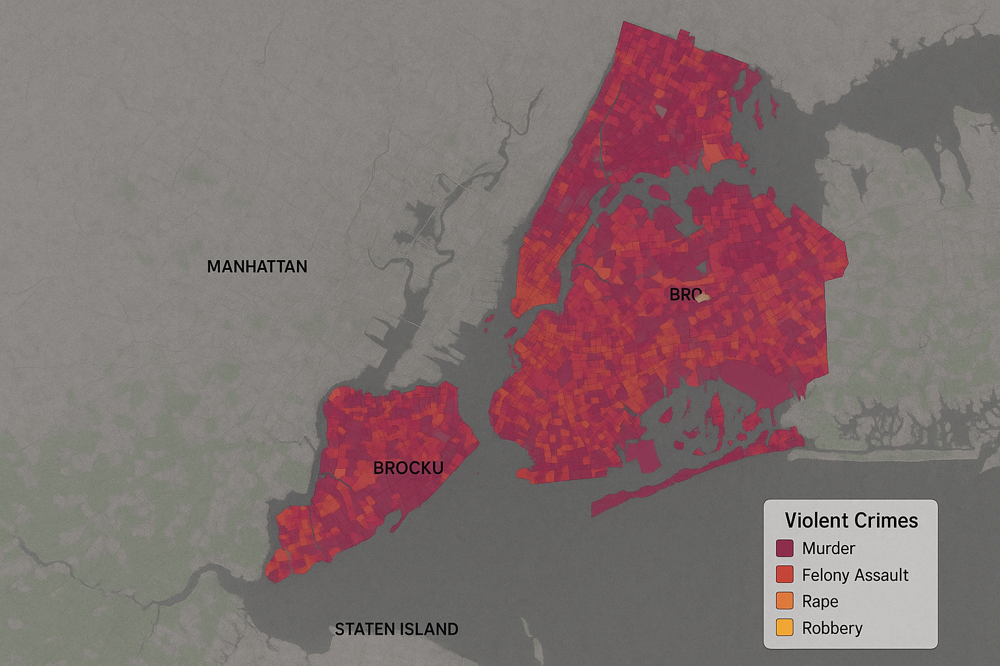

Felony Assault
12
3% vs previous period
Confidence:
87%
Why Flagged: Seasonal pattern detected with 87% confidence. Historical data shows consistent increases in property crimes during this period over the past 3 years.
Murder
241
3% vs previous period
Confidence:
72%
Analysis: 72% confidence in downward trend due to increased police presence in high-risk areas.
Rape
470
3% vs previous period
Confidence:
91%
Analysis: 91% confidence in upward trend based on consistent reporting patterns and verified cases.
Robbery
63
3% vs previous period
Confidence:
68%
Analysis: 68% confidence due to preliminary data showing reduced incidents in 3 precincts.